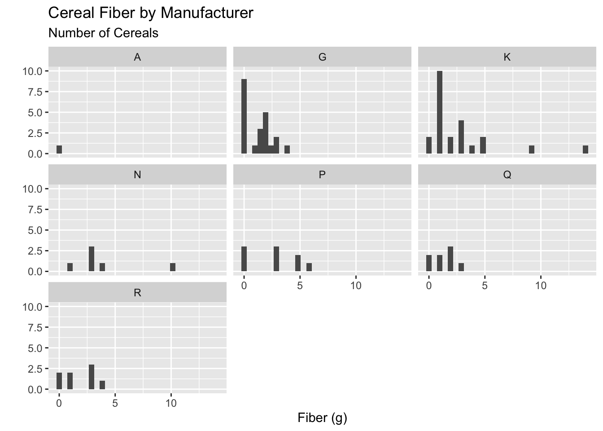

7 Data Wrangling
7.1 Welcome to the tidyverse!
Since R is open source, there are many different options for functions that can accomplish the same task. Over time, full sets of functions and packages have been developed with the purpose of working well together for data analysis and visualization.
In this class, we will use the tidyverse set of packages to visualize and wrangle data. This decision impacts the way that we will think about working with data (in a good way - in our opinion!).
In their own words, the tidyverse developers describe it as:
an opinionated collection of R packages designed for data science. All packages share an underlying design philosophy, grammar, and data structures.1
Most of the functionality you will need for an entire data analysis workflow will have the cohesive grammar of the tidyverse. Already, you have learned how to read in data with readr and visualize data with ggplot2.

7.2 Data Wrangling
We are going to keep working with the cereal dataset in the liver package. Take a minute to remind yourself what the data looks like!
head(cereal) name manuf type calories protein fat sodium fiber carbo
1 100% Bran N cold 70 4 1 130 10.0 5.0
2 100% Natural Bran Q cold 120 3 5 15 2.0 8.0
3 All-Bran K cold 70 4 1 260 9.0 7.0
4 All-Bran with Extra Fiber K cold 50 4 0 140 14.0 8.0
5 Almond Delight R cold 110 2 2 200 1.0 14.0
6 Apple Cinnamon Cheerios G cold 110 2 2 180 1.5 10.5
sugars potass vitamins shelf weight cups rating
1 6 280 25 3 1 0.33 68.40297
2 8 135 0 3 1 1.00 33.98368
3 5 320 25 3 1 0.33 59.42551
4 0 330 25 3 1 0.50 93.70491
5 8 -1 25 3 1 0.75 34.38484
6 10 70 25 1 1 0.75 29.50954str(cereal)'data.frame': 77 obs. of 16 variables:
$ name : Factor w/ 77 levels "100% Bran","100% Natural Bran",..: 1 2 3 4 5 6 7 8 9 10 ...
$ manuf : Factor w/ 7 levels "A","G","K","N",..: 4 6 3 3 7 2 3 2 7 5 ...
$ type : Factor w/ 2 levels "cold","hot": 1 1 1 1 1 1 1 1 1 1 ...
$ calories: int 70 120 70 50 110 110 110 130 90 90 ...
$ protein : int 4 3 4 4 2 2 2 3 2 3 ...
$ fat : int 1 5 1 0 2 2 0 2 1 0 ...
$ sodium : int 130 15 260 140 200 180 125 210 200 210 ...
$ fiber : num 10 2 9 14 1 1.5 1 2 4 5 ...
$ carbo : num 5 8 7 8 14 10.5 11 18 15 13 ...
$ sugars : int 6 8 5 0 8 10 14 8 6 5 ...
$ potass : int 280 135 320 330 -1 70 30 100 125 190 ...
$ vitamins: int 25 0 25 25 25 25 25 25 25 25 ...
$ shelf : int 3 3 3 3 3 1 2 3 1 3 ...
$ weight : num 1 1 1 1 1 1 1 1.33 1 1 ...
$ cups : num 0.33 1 0.33 0.5 0.75 0.75 1 0.75 0.67 0.67 ...
$ rating : num 68.4 34 59.4 93.7 34.4 ...Let’s start exploring the data. Maybe I want to look at the distribution of fiber for cereals from different manufacturers.
Recreate the plot below trying not to look at the code!

ggplot(cereal, aes(x = fiber)) +
geom_histogram() +
facet_wrap(vars(manuf)) +
labs(x = "Fiber (g)",
y = "",
subtitle = "Number of Cereals",
title = "Cereal Fiber by Manufacturer")Okay, there is a lot going on here and some manufacturers don’t have that many cereals anyway!
I would rather just look at the two biggest manufacturers, General Mills and Kelloggs and while I am at it, it would be nice to change the labels from “G” and “K” to these recognizable names. But how to do this?
Most of the the time, the data we have isn’t exactly what we need for a specific plot or analysis. This is where data wrangling, cleaning, and manipulation come in, which is the focus of the next couple of weeks of class.
Before jumping into any code, it is important to think about what the data is that we want for a plot or analysis and the steps that will take us from the current data to that version.
In groups, first draw the output that is described and then describe in words the steps you would take from cereal data to get the output for each of the following:
Plot just the fiber for Kelloggs and General Mills and make the manufacturer labels more clear.
What is the ratio of fiber to sugars in each cereal?
Create a new dataset that only has Nabisco cereals and displays the protein, fat, and sodium in each.
Create a table that shows, for each manufacturer the average and standard deviation of the grams of sugar in their cereals, along with how many cereals are in the data for each manufacturer. Order the table from most sugar (on average) to least.
7.3 dplyr for Data Wrangling
dplyr is part of the tidyverse that provides us with the Grammar of Data Manipulation.
- This package gives us the tools to wrangle, manipulate, and tidy our data with ease.
- Check out the
dplyrcheatsheet.
Each dplyr verb describes a common task for working with rectangular data. In all tidyverse functions, data comes first – literally, as it’s the first argument to any function.
In addition, you don’t use df$variable to access a variable - you refer to the variable by its name alone (“bare” names). This makes the syntax much cleaner and easier to read, which is another principle of the tidy philosophy.
The primary verbs are:
-
filter()/filter_out() arrange()select()mutate()summarize()- Use
group_by()to perform group wise operations - Use the pipe operator (
|>or%>%) to chain together data wrangling operations
7.3.1 filter() and filter_out()

Sometimes rather than thinking about keeping rows based on some criteria, it makes more sense to think about dropping rows based on a criteria. This is when the brand new filter_out() is useful!
Useful comparison operations in R
We might not always want to only filter on a variable set equal to a certain category or value, the following operations can help you combine logical operations in filter().
-
>greater than -
<less than -
==equal to -
%in%identifies if an element belongs to a vector -
|,when_any()or -
,,&,when_all()and
7.3.2 piping operator |>
Okay now we at least have gotten down to the two manufacturers we are interested! Let’s use this data to create a new plot.
My first idea is that I could save a newdataset called plot_data and then make the plot with that dataset:

This is fine, but if I am not actually going to use my plot_data again, I don’t really need to save it.
Okay, instead I could put this new data into the data argument in ggplot:
That definitely works, but it’s super hard to read and see what is going on!
This is where the piping operator comes in! The pipeing operator lets us “pipe” the output from one line of code into the next.
There are two piping operators: the native pipe |> and the matgittr pipe %>%. We will use the native pipe |>, but you will still see the matgittr pipe around as an FYI.
7.3.3 arrange()
7.3.4 select()
var3:var5:select(df, var3:var5)will give you a data frame with columns var3, anything between var3 and var 5, and var5-
!(<set of variables>)will give you any columns that aren’t in the set of variables in parentheses-
(<set of vars 1>) & (<set of vars 2>)will give you any variables that are in both set 1 and set 2.(<set of vars 1>) | (<set of vars 2>)will give you any variables that are in either set 1 or set 2. -
c()combines sets of variables.
-
dplyr also defines a lot of variable selection “helpers” that can be used inside select() statements. These statements work with bare column names (so you don’t have to put quotes around the column names when you use them).
-
everything()matches all variables -
last_col()matches the last variable.last_col(offset = n)selects the n-th to last variable. -
starts_with("xyz")will match any columns with names that start with xyz. Similarly,ends_with()does exactly what you’d expect as well. -
contains("xyz")will match any columns with names containing the literal string “xyz”. Note,containsdoes not work with regular expressions (you don’t need to know what that means right now). -
matches(regex)takes a regular expression as an argument and returns all columns matching that expression. -
num_range(prefix, range)selects any columns that start with prefix and have numbers matching the provided numerical range.
There are also selectors that deal with character vectors. These can be useful if you have a list of important variables and want to just keep those variables.
-
all_of(char)matches all variable names in the character vectorchar. If one of the variables doesn’t exist, this will return an error. -
any_of(char)matches the contents of the character vectorchar, but does not throw an error if the variable doesn’t exist in the data set.
There’s one final selector -
-
where()applies a function to each variable and selects those for which the function returns TRUE. This provides a lot of flexibility and opportunity to be creative.
7.3.5 mutate()
7.3.6 summarize()
7.3.7 group_by()
In groups match the dplyr verbs to your suggested steps:
What is the ratio of fiber to sugars in each cereal?
Create a new dataset that only has Nabisco cereals and displays the protein, fat, and sodium in each.
Create a table that shows, for each manufacturer the average and standard deviation of the grams of sugar in their cereals, along with how many cereals are in the data for each manufacturer. Order the table from most sugar (on average) to least.
To review what we covered this week, refer to Chapter 3: Data Transformation in R4DS https://r4ds.hadley.nz/data-transform.html
https://www.tidyverse.org/↩︎